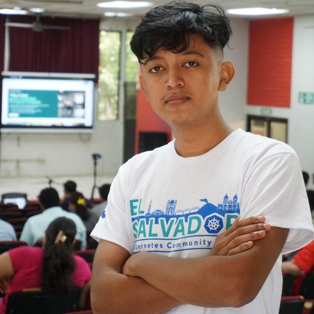

Conoce a Nuestros Integrantes

Jasson Armando Gomez Guevara
Carnet: GG19037
Estudiante de Ingeniería en Sistemas Informáticos, apasionado por el desarrollo web y las tecnologías modernas. Líder del equipo TPI 2025, enfocado en crear soluciones innovadoras y trabajar colaborativamente.
Mélida Fuentes Miranda
Carnet: FM21015
[Descripción pendiente - será completada por Mélida]
Katia Guadalupe Chevez Campos
Carnet: CC19036
[Descripción pendiente - será completada por Katia]
German Daniel Hernández Pinto
Carnet: HP19012
[Descripción pendiente - será completada por German]